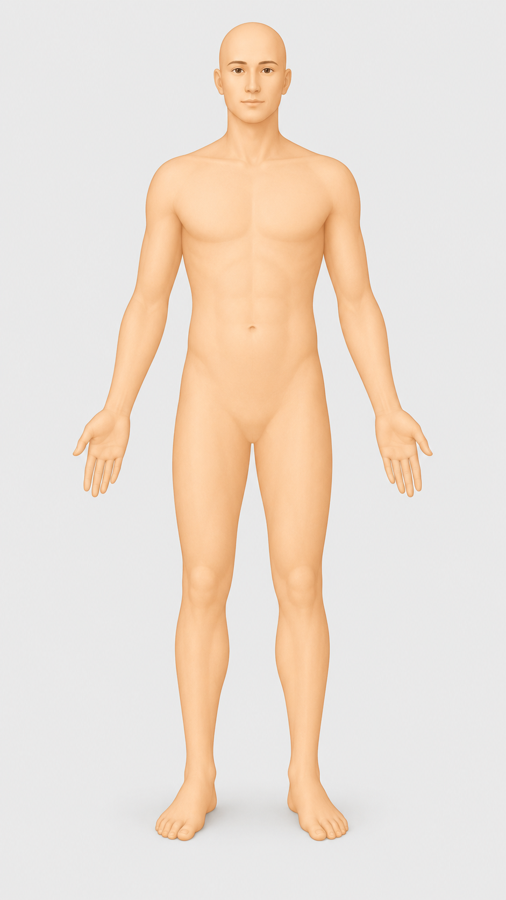

Lichaam
Statische, gecentreerde atlasweergave afgestemd op de gebruiker.
Atlas Studio: geen blurSafeBlur alleen voor AR/foto’s/uploadsProfiel nog niet ingesteld

Nog geen structuur gekozen
Selecteer eerst een structuur of regio voor gerichtere vragen.
Nog geen analyse uitgevoerd.
Educatie & preventie